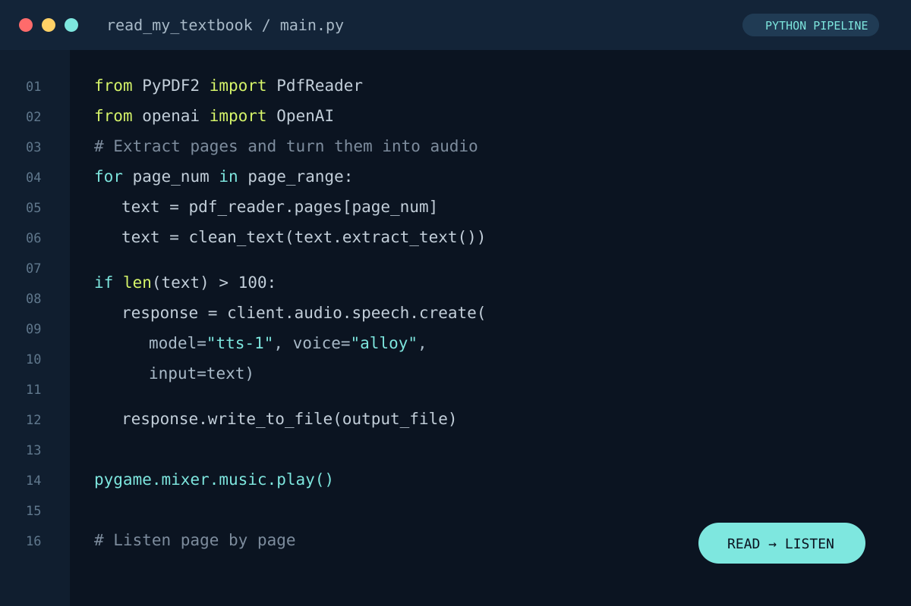
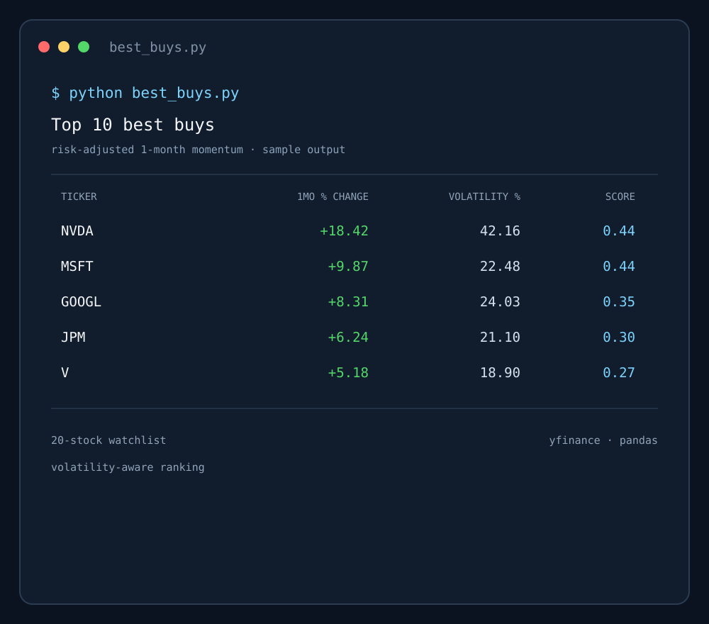

01 · MARKET ANALYSIS
AI vs S&P 500
I compared four AI-focused stocks with the S&P 500 across four years of daily data.
Read the analysisOpen to 2027 internships
I’m Thai Gaines, an AI & Business Analytics student at the University of South Florida. I build tools that make complex information easier to work with.
A few tools and analyses I’ve built.
01 · MARKET ANALYSIS
I compared four AI-focused stocks with the S&P 500 across four years of daily data.
Read the analysis02 · PERSONAL TOOL
A Python tool I built for myself to turn textbook pages into audio and give dense material another way in.
Explore on GitHub

03 · DECISION SUPPORT
A Python screener that ranks a 20-stock watchlist by risk-adjusted one-month momentum, balancing recent returns against annualized volatility to determine steadier movers.
Explore on GitHubMy work spans databases, financial models, research, and customer-facing problem solving.
03 / Next conversation
I’m open to conversations about analytics, AI, and 2027 internships.
Start a conversation